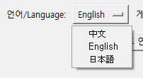
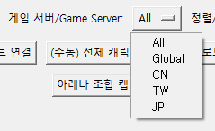
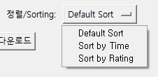
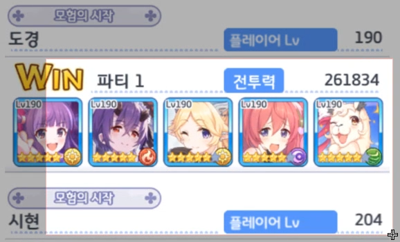
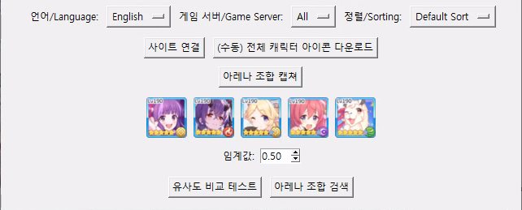
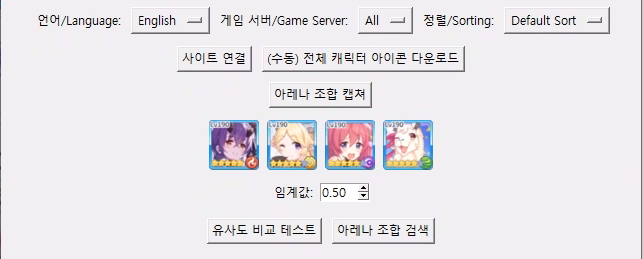

문서 버전: 1.0.0 (프로그램 버전 1.0.0 기준)
최종 수정일: 2025-05-21
pcrdfans.com 및 redive.estertion.win 웹사이트의 현재 구조를 기반으로 작동합니다. 해당
웹사이트들의 대규모 업데이트 시 정상 작동하지 않을 수 있으며, 이 경우 개발자의 프로그램 업데이트가 필요할 수 있습니다.이 프로그램은 인기 모바일 게임 '프린세스 커넥트! Re:Dive'(이하 프리코네)의 아레나(배틀 아레나, 프린세스 아레나)에서 상대방의 조합을 보고 효과적인 공략 조합을 빠르게 찾을 수 있도록 도와주는 자동화 도구입니다.
게임 화면에서 상대방 조합 캐릭터를 마우스로 드래그하여 캡처하면, 프로그램이 자동으로 캐릭터 아이콘을 인식하고, 이를 바탕으로 pcrdfans.com 웹사이트에서 최적의 공격 조합을 검색해줍니다.
주요 기능:
그림 1-1: 프리코네 아레나 조합 자동 검색기 메인 화면
프로그램을 실행하면 메인 창이 나타납니다. 처음 실행 시 프로그램 사용 순서 가이드가 로그 창에 표시됩니다.
그림 3-1: 프로그램 최초 실행 시 화면 및 로그 창 안내
조합 검색을 시작하기 전에, 사용자의 게임 환경에 맞게 설정을 변경해야 합니다. 이 설정은 pcrdfans.com 웹사이트 검색 시 적용됩니다.
pcrdfans.com 웹사이트를 해당 언어 페이지로 이동시키고, 아래 게임 서버 및 정렬 방식 옵션도 해당 언어에 맞게 동기화됩니다.|

|

|

|
|
웹 페이지 언어 선택 메뉴 |
게임 서버 선택 메뉴 |
정렬 방식 선택 메뉴 |
그림 3-2: 웹 페이지 언어, 게임 서버, 정렬 방식 설정 드롭다운 메뉴
위 설정을 마친 후, [사이트 연결] 버튼을 클릭합니다.
character_images/character_unit_icon_all 폴더에 JPG 파일이
없는 경우): 캐릭터 인식을 위해 필요한 모든 캐릭터의 인게임 아이콘을 redive.estertion.win 사이트에서
자동으로 다운로드합니다 (WebP 형식 다운로드 후 JPG로 변환). 이 과정은 다소 시간이 소요될 수 있으며(수 분 소요 가능), 로그 창에 진행
상황이 표시됩니다.
영상 3-3: '사이트 연결' 과정 및 로그 창 진행 상황 (1배속)
성공적으로 연결되면 로그 창에 "사이트 연결 및 아이콘 처리 완료!" 메시지가 나타나고, 관련 버튼들이 활성화됩니다.
그림 4-1: 아레나 조합 캡처 시작
영상 4-2: 조합 드래그 캡처 과정 (1배속))
| 좋은 캡처 예시 | 나쁜 캡처 예시 |
|
|

|
|
(아이콘이 명확히 포함되고 테두리까지 적절히 감싼 모습) |
(아이콘 일부 잘림, 너무 넓게 선택하여 다른 UI 포함) |
그림 4-3: 성공적인 캡처와 잘못된 캡처 예시 비교
캡처가 완료되면, 프로그램 메인 창의 아이콘 미리보기 영역에 감지된 캐릭터 아이콘들이 순서대로 표시됩니다. (좌측부터 우측 순)
| 아이콘 미리보기 (성공 예시) | 아이콘 미리보기 (인식 실패 예시) |
|

|

|
|
(성공적으로 캐릭터 아이콘이 순서대로 표시된 모습) |
(일부 아이콘 인식 실패, 임계값 조절 또는 재캡처 필요) |
그림 4-4: 캡처 후 아이콘 미리보기 (좌: 성공, 우: 인식 실패 예시)
그림 4-5: 임계값 설정 스핀박스
캡처된 아이콘과 임계값 설정이 완료되면, [아레나 조합 검색] 버튼을 클릭합니다.
영상 4-6: 아레나 조합 자동 검색 실행 과정 (1배속)
검색이 완료되면 로그 창에 관련 메시지가 표시됩니다. 브라우저 창은 사용자가 직접 닫아야 합니다.
이 기능은 캡처된 아이콘이 프로그램 내부에서 어떻게 인식되고 있는지, 어떤 아이콘들과 유사하다고 판단되는지 상세하게 확인할 수 있는 디버깅 및 분석용 도구입니다. 캐릭터 인식이 잘 안될 때 원인 파악에 매우 유용합니다.
그림 5-1: 유사도 비교 테스트 결과 창 예시
이 기능은 캐릭터 인식이 잘 안될 때 "왜 이 캐릭터로 인식했을까?" 또는 "왜 인식을 못 했을까?"에 대한 단서를 제공하며, 적절한 임계값 조절의 근거로 활용할 수 있습니다.
프로그램은 "[사이트 연결]" 시 자동으로 필요한 아이콘을 다운로드/업데이트하지만, 다음과 같은 경우 수동으로 전체 캐릭터 아이콘을 다시 다운로드할 수 있습니다.
character_images/character_unit_icon_all 폴더 내 JPG 파일)이 손상되거나 누락된
것으로 의심될 경우character_images/character_unit_icon_all 폴더가 실수로 삭제되었거나, 내부에 JPG 파일이 없는 경우[ (수동) 전체 캐릭터 아이콘 다운로드 ] 버튼을 클릭하면 안내 및 확인 창이 나타납니다.
그림 5-2: 전체 캐릭터 아이콘 수동 다운로드 확인 창
"예"를 클릭하면 redive.estertion.win 사이트에서 모든 캐릭터의 아이콘(WebP)을 다운로드하고 JPG로 변환하여 저장합니다. 원본 WebP 파일은
변환 후 삭제됩니다. 이 작업은 인터넷 속도 및 PC 성능에 따라 몇 분 정도 소요될 수 있으며, 진행 상황은 로그 창에 상세히 표시됩니다. 작업 중에는
다른 버튼 사용이 제한될 수 있습니다.
프로그램 메인 창 상단의 "메뉴(Menu)" 항목을 통해 다음과 같은 추가 정보를 확인하거나 기능에 접근할 수 있습니다.
https://github.com/IZH318)가 사용자의 기본 웹 브라우저에서 새 탭으로 열립니다. 개발자의 다른 프로젝트를 확인하거나, 프로그램의 소스 코드를 찾아볼 수 있습니다.프로그램 메인 창 하단에는 로그 메시지 박스가 있습니다. 이 창에는 프로그램의 모든 주요 동작과 상태, 오류 정보가 시간 순서대로 기록됩니다.
[YYYY-MM-DD HH:MM:SS.mmm] 프로그램 실행 성공)[시간] 영어 페이지로 변경 중..., [시간] 서버 변경 완료: All)[시간] 새로운 버전이 감지되었습니다!,
[시간] 아이콘 처리 중...)
[시간] 다운로드 완료: 100131.webp (15.3%),
[시간] JPG 변환 완료 및 WebP 삭제: 100131.webp (15.3%))
[시간] 둥근 사각형 모양의 아이콘을 감지하지 못했습니다.)[시간] 분할 이미지 1 처리 중...,
[시간] 유사한 스프라이트 아이콘을 찾았습니다: char_023.png (점수: 0.8765, 기준: 102531.jpg))
[시간] 102531.jpg와 유사한 char_023.png 스프라이트 아이콘 클릭 완료,
[시간] 검색이 성공적으로 완료되었습니다!)
[시간] 오류 발생: [Errno 2] No such file or directory: '...',
Traceback (most recent call last): ...)
로그 창은 프로그램이 현재 어떤 작업을 하고 있는지, 문제가 발생했다면 어떤 부분에서 발생했는지 파악하는 데 매우 중요한 단서를 제공합니다. 버그 제보 시 로그 내용을 함께 전달하면 개발자가 문제를 더 빠르고 정확하게 파악하는 데 도움이 됩니다.
webdriver-manager는 이 ChromeDriver를 자동으로 관리(다운로드, 버전 관리)해줍니다.redive.estertion.win에서 다운로드한 JPG 파일들이 이에 해당합니다.
Q1: 이 프로그램은 무료인가요?
A1: 네, 이 프로그램은 무료로 제공됩니다.
Q2: 어떤 운영체제에서 사용할 수 있나요?
A2: 이 프로그램은 Python으로 작성되었으며, Google Chrome 브라우저가 설치된 Windows 환경에서 테스트 및 개발되었습니다. 이론적으로는 Python 및 필요한 라이브러리가 설치된 다른 OS(macOS, Linux)에서도 실행 가능할 수 있으나, 화면 캡처, 창 제어 등 일부 기능은 OS에 따라 다르게 동작하거나 호환성 문제가 발생할 수 있습니다. 공식적으로는 Windows 환경을 권장합니다.
Q3: 프로그램 사용에 특별한 기술이 필요한가요?
A3: 기본적인 컴퓨터 사용 능력과 프리코네 게임에 대한 이해만 있으면 충분합니다. 이 설명서를 따라 하시면 쉽게 사용하실 수 있습니다.
Q4: 이 프로그램이 제 게임 계정에 영향을 주거나, 제재를 받을 가능성은 없나요?
A4: 이 프로그램은 게임 화면을 캡처하고, 공개된 웹사이트(pcrdfans.com)의 정보를 활용하여 검색을 자동화하는 방식으로 동작합니다. 게임 클라이언트를 직접
수정하거나, 서버와 비정상적인 통신을 하지 않으므로 일반적인 사용으로 인한 계정 제재 위험은 매우 낮다고 판단됩니다. 또한, 이 프로그램은 사용자의 게임 계정 정보나 개인 정보를
요구하거나 수집하지 않습니다. 하지만 모든 자동화 도구 사용에는 항상 잠재적인 위험이 따를 수 있음을 인지하시고, 사용자 본인의 판단과 책임하에 사용하시기 바랍니다.
(본 설명서 상단의 "중요 숙지사항" 및 14. 면책 조항 참고)
Q5: 프리코네 게임이 아닌 다른 게임에서도 사용할 수 있나요?
A5: 아니요, 이 프로그램은 프리코네 아레나의 캐릭터 아이콘과 pcrdfans.com 웹사이트 구조에 특화되어 개발되었으므로 다른 게임에서는 사용할 수 없습니다.
Q6: 프로그램을 어떻게 설치하나요?
A6: 개발자의 배포 방식에 따라 다릅니다.
requirements.txt 파일이 있다면, 터미널(명령 프롬프트 또는
PowerShell)에서 해당 폴더로 이동 후 pip install -r requirements.txt 명령어를 실행합니다.
pip install -r requirements.txt만약 requirements.txt 파일이 없다면, 코드 상단에 명시된 라이브러리(예:
cv2, Pillow, scikit-image, requests,
selenium, webdriver-manager, beautifulsoup4,
numpy)들을 pip install 라이브러리명 형태로 개별 설치합니다.
(주의: tkinter는 Python 표준 라이브러리이므로 pip로 별도 설치할 필요가 없습니다.)
pip install opencv-python Pillow scikit-image selenium webdriver-manager requests beautifulsoup4 numpypip를 최신 버전으로 업그레이드한 후 다시 시도해 보세요.
python -m pip install --upgrade piparena_searcher.py)을 실행합니다.Q7: "webdriver-manager", "selenium" 등의 오류가 발생하며 실행되지 않아요.
A7: Q6에서 안내된 대로 프로그램 실행에 필요한 라이브러리가 제대로 설치되지 않았거나, Python 또는 라이브러리 버전 간 호환성 문제일 수 있습니다. 설치된 라이브러리 버전을
확인하고, 필요시 재설치하거나 버전을 조정해 보세요. pip list 명령어로 설치된 라이브러리 목록 및 버전을 확인할 수 있습니다. 특히,
selenium과 webdriver-manager는 최신 버전으로 유지하는 것이 좋습니다. 로그 창의 오류 메시지를
확인하여 어떤 라이브러리에서 문제가 발생하는지 파악하는 것이 중요합니다.
Q8: Chrome 브라우저가 꼭 필요한가요? 다른 브라우저는 안 되나요?
A8: 네, 현재 프로그램은 Google Chrome 브라우저 자동화를 기준으로 작성되었습니다 (ChromeDriverManager 사용). 다른
브라우저(Firefox, Edge 등)를 지원하려면 코드 수정이 필요하며, 현재 버전에서는 지원하지 않습니다. Chrome이 설치되어 있지 않거나, 프로그램이 Chrome
실행 파일을 찾을 수 없는 경우 (예: 특이한 경로에 설치) 오류가 발생합니다.
Q9: "사이트 연결" 버튼은 언제 눌러야 하나요? 매번 눌러야 하나요?
A9: 한 번 성공적으로 연결하고 아이콘 데이터를 받아오면, 프로그램 재시작 전까지는 일반적으로 다시 누르지 않아도 됩니다. 하지만 브라우저 창을 사용자가 임의로 닫았거나, 인터넷 연결 문제로 웹사이트와의 연결이 끊어졌다고 판단될 경우 다시 눌러야 합니다. 로그 창에 관련 오류가 표시될 수 있습니다.
Q10: 아이콘 다운로드는 얼마나 자주 해야 하나요?
A10: "[사이트 연결]" 시 자동으로 최신 버전을 확인하고 필요시 업데이트합니다. 따라서 사용자가 직접 신경 쓸 필요는 거의 없습니다.
Q11: "전체 캐릭터 아이콘 다운로드"가 너무 오래 걸려요. 정상인가요?
A11: 수백 개의 캐릭터 아이콘을 다운로드하고 WebP에서 JPG로 변환하는 과정이므로 인터넷 속도 및 PC 성능에 따라 몇 분(일반적으로 1분 이내, 경우에 따라 그 이상) 정도 소요될 수 있습니다. 이는 정상적인 과정이며, 한 번 완료하면 다시 할 필요는 거의 없습니다. 로그 창에 개별 파일 다운로드 및 변환 진행 상황이 표시되니 잠시 기다려주세요. 만약 비정상적으로 오래 걸리거나(예: 3분 이상) 멈춘 것 같다면 인터넷 연결을 확인하고 프로그램을 재시작하여 다시 시도해 보세요.
Q12: 아이콘 파일은 어디에 저장되나요? 임의로 삭제해도 되나요?
A12: 아이콘 파일은 프로그램 실행 폴더 내의 character_images 폴더에 하위 폴더(예:
20250503와 같은 버전명 폴더, character_unit_icon_all 폴더)를 만들어 저장됩니다. 이 파일들은 프로그램 작동에
필수적이므로 임의로 삭제하거나 수정하면 프로그램이 정상 작동하지 않을 수 있습니다. 만약 문제가 발생하여 삭제해야 한다면, 삭제 후 프로그램을 재시작하여
"[사이트 연결]" 또는 "[ (수동) 전체 캐릭터 아이콘 다운로드 ]"를 통해 다시 받아야 합니다.
Q13: pcrdfans.com의 아이콘과 redive.estertion.win의 아이콘을 둘 다 사용하는 이유가 무엇인가요?
A13: 이 프로그램은 정확하고 효율적인 아이콘 인식 및 웹 자동화를 위해 다단계 비교 방식을 사용합니다.
redive.estertion.win 아이콘 (인게임 아이콘, JPG): 사용자가 캡처한 게임 화면의 아이콘과
가장 먼저 비교됩니다. 실제 인게임 아이콘과 매우 유사하여 어떤 캐릭터인지 1차적으로 식별하는 데 가장 정확도가 높습니다. 이 단계는 "이 아이콘은
대략 어떤 캐릭터일 것이다"라는 후보군을 찾는 과정입니다.
pcrdfans.com 아이콘 (스프라이트 아이콘, PNG): 1, 2단계를 거쳐 최종 식별/변환된 인게임 아이콘을
pcrdfans.com 웹사이트에서 실제로 클릭해야 할 대상 아이콘과 다시 한번 비교합니다. 이를 통해 웹사이트의 수많은
아이콘 중 정확히 클릭해야 할 아이콘을 최종 확정합니다. 이 단계는 "후보군 중에서 웹사이트의 이 아이콘이 확실하다"고 결정하는 과정입니다.
Q14: "아레나 조합 캡쳐" 시 어떤 부분을 캡처해야 하나요?
A14: 상대방 조합의 캐릭터 얼굴 또는 아이콘 전체가 명확하게 보이도록, 아이콘 영역을 모두 포함하여 드래그해야 합니다. 아이콘 테두리까지 충분히 포함하되, 각 아이콘 사이의 간격은 최소화하는 것이 좋습니다. 너무 넓거나 좁게 캡처하면 인식률이 떨어질 수 있습니다. (4.1 아레나 조합 캡처의 스크린샷 예시 참고)
Q15: 캡처 영역을 잘못 지정했어요. 취소할 수 있나요?
A15: 현재 버전에서는 드래그 중 선택을 취소하는 기능은 없습니다. 마우스 버튼을 놓으면 해당 영역이 캡처되므로, 만약 잘못 선택했다면 당황하지 마시고 프로그램 메인 창으로 돌아온 후 다시 [아레나 조합 캡쳐] 버튼을 눌러 재시도하시면 됩니다.
Q16: 듀얼 모니터(또는 다중 모니터)를 사용하는데, 캡처가 제대로 안 돼요.
A16: 프로그램은 일반적으로 주 모니터를 기준으로 화면 캡처를 시도합니다. 프리코네 게임이 실행 중인 모니터가 Windows 설정에서 주 모니터로 설정되어 있는지 확인해 보세요. 만약 문제가 지속된다면, 일시적으로 단일 모니터 환경으로 변경하여 사용하거나, 프리코네 게임 창을 주 모니터로 옮겨 실행하는 것을 권장합니다. 일부 시스템에서는 창 모드로 실행 중인 게임의 캡처가 더 안정적일 수 있습니다.
Q17: 캡처했는데 아이콘 미리보기에 아무것도 안 떠요 / 이상한 이미지가 떠요.
A17: 이 문제는 다양한 원인이 있을 수 있습니다. 다음 사항들을 점검해 보세요.
Q18: 캐릭터 인식이 잘 안 돼요. 다른 캐릭터로 인식하거나 아예 인식을 못 해요.
A18: 이 문제는 다양한 원인이 있을 수 있습니다. 다음 사항들을 점검해 보세요.
pcrdfans.com 아이콘을 최신화하고, 필요시 "[ (수동) 전체
캐릭터 아이콘 다운로드 ]"를 통해 redive.estertion.win 아이콘도 최신 데이터로 유지하세요. 특히 게임 업데이트로 신규 캐릭터나 신규 ★6이
추가된 경우 데이터 업데이트가 필수적입니다.Q19: 한정 캐릭터나 콜라보 캐릭터도 인식하나요?
A19: redive.estertion.win과 pcrdfans.com에서 해당 캐릭터의 아이콘 데이터를 제공하고, 사용자의 프로그램에 해당
아이콘 데이터가 최신 버전으로 다운로드되어 있다면 인식 가능합니다. 최신 캐릭터의 경우, 아이콘 데이터가 각 사이트에 반영되고 사용자가 프로그램 내에서 데이터를 업데이트할 때까지 시간이
걸릴 수 있습니다.
Q20: "아레나 조합 검색" 버튼을 눌러도 아무 반응이 없거나, Chrome 브라우저가 안 떠요.
A20: 이 문제는 다양한 원인이 있을 수 있습니다. 다음 사항들을 점검해 보세요.
WebDriverException,
NoSuchElementException 등)가 있는지 확인하세요. 해당 오류 메시지를 검색하거나 개발자에게 문의하면 해결에 도움이 될 수 있습니다.
chromedriver.exe)를 예외 처리해야 할 수 있습니다.Q21: "유사도 비교 테스트" 결과 창의 점수는 무엇을 의미하나요?
A21: 점수는 SSIM(Structural Similarity Index Measure, 구조적 유사도 지수) 값을 의미하며, 일반적으로 -1에서 1 사이의 값을 가집니다. 이 프로그램에서는 0과 1 사이로 정규화되어 표시될 수 있으며, 1에 가까울수록 두 이미지가 시각적으로 더 유사하다는 뜻입니다. 프로그램은 사용자가 설정한 "임계값"보다 이 SSIM 점수가 높아야 두 아이콘을 동일(또는 매우 유사한) 캐릭터로 판단합니다. 예를 들어, 임계값이 0.50일 때 어떤 아이콘 비교 점수가 0.65라면 유사하다고 판단하고, 0.45라면 다르다고 판단합니다.
Q22: 프로그램 업데이트는 어떻게 하나요?
A22: 개발자가 새로운 버전의 스크립트나 실행 파일을 배포하면, 기존 파일을 새 파일로 교체하여 업데이트할 수 있습니다.
character_images 폴더는 가급적 유지하시는 것이 좋습니다. 이전 버전에서 다운로드한 아이콘 데이터를
새 버전에서도 대부분 사용할 수 있어 다시 다운로드하는 시간을 절약할 수 있습니다.character_images 폴더 삭제를 권장하는 경우에는 해당 폴더를
백업 후 삭제하고 새 버전에서 아이콘을 다시 다운로드하는 것이 좋을 수 있습니다. (보통은 기존 폴더 유지)Q23: 개발자에게 버그를 제보하거나 기능을 제안하고 싶어요.
A23: 매우 환영합니다! 11. 피드백 및 버그 제보 안내 섹션을 참고하여 자세한 정보를 제공해 주시면 프로그램 개선에 큰 도움이 됩니다.
WebDriverException 관련 오류 발생 시:
chrome.exe 및 chromedriver.exe 프로세스를 종료하고 다시 시도해 보세요.webdriver-manager가 최신 ChromeDriver를 제대로 다운로드하지 못했거나, 기존 ChromeDriver 파일이
손상되었을 수 있습니다. C:\Users\사용자명\.wdm\drivers\chromedriver (Windows 기준, 사용자명은 실제 사용자
폴더명) 경로의 하위 폴더(버전명 폴더)를 삭제하고 프로그램을 재실행하면 ChromeDriver를 다시 다운로드합니다.pcrdfans.com 웹사이트 구조 변경 시 대처:
pcrdfans.com 웹사이트의 HTML 구조(클래스 명, ID, XPATH 등)가 크게 변경되면 프로그램의 웹 자동화 로직(아이콘
클릭, 필터 적용, 검색 버튼 클릭 등)이 정상 작동하지 않을 수 있습니다. 이 경우 로그 창에 NoSuchElementException
(요소를 찾을 수 없음), TimeoutException (요소가 나타날 때까지 기다렸지만 실패) 등의 오류가 자주 발생할 수 있습니다.
다운로드 실패: 123456.webp - HTTP 404,
JPG 변환 실패: 123456.webp - (오류 내용))
redive.estertion.win 사이트의 일시적인 문제이거나 해당 파일 자체의 문제일 수 있습니다.webdriver-manager는 대부분 최신 Chrome 버전에 맞는 ChromeDriver를 자동으로 관리해주지만, 간혹 Chrome
브라우저의 급격한 업데이트와 webdriver-manager의 ChromeDriver 지원 사이에 시간 차이가 발생하여 호환성 문제가 생길 수
있습니다. 프로그램과 Chrome 브라우저 모두 가능한 최신 안정화 버전으로 유지하는 것이 좋습니다.여러분의 피드백과 버그 제보는 프로그램을 더욱 발전시키는 데 큰 힘이 됩니다!
언제든지 환영합니다! 위 제보 채널을 통해 자유롭게 의견을 보내주세요.
Priconne Arena Deck Auto Searcher 폴더)를 그대로 삭제하시면 됩니다.
character_images 폴더도 함께 삭제됩니다.webdriver-manager는 ChromeDriver 파일을 C:\Users\사용자명\.wdm 폴더 (Windows 기준)에
캐시합니다. 프로그램 제거와는 별개로 이 폴더를 삭제해도 무방하나, 다른 webdriver-manager를 사용하는 프로그램이 있다면 영향을 줄 수 있으니
확실하지 않으면 그대로 두셔도 됩니다. (이 폴더는 ChromeDriver 파일만 저장하므로 용량이 크지 않습니다.)이 프로그램을 개발하고 개선하는 과정에서 많은 분들과 훌륭한 오픈소스 프로젝트로부터 큰 도움을 받았습니다. 이 자리를 빌려 진심으로 감사의 말씀을 전합니다.
이 모든 분들의 도움과 노력에 다시 한번 깊은 감사를 드립니다.
pcrdfans.com 및 redive.estertion.win 등 외부 웹사이트의 정보 및 서비스에
의존합니다. 이러한 외부 서비스의 변경, 중단 또는 오류로 인해 프로그램이 정상적으로 작동하지 않을 수 있으며, 개발자는 이에 대한 책임을 지지 않습니다.본 프로그램을 사용하는 것은 위 면책 조항에 동의하는 것으로 간주합니다.
이 설명서가 프리코네 아레나 조합 자동 검색기를 사용하는 데 도움이 되기를 바랍니다. 즐거운 프리코네 생활 되세요!